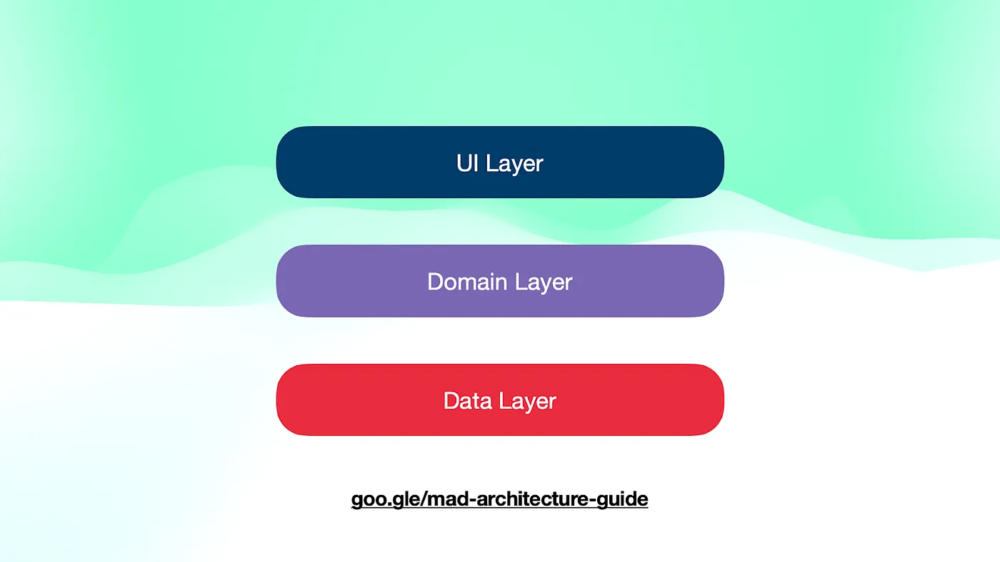
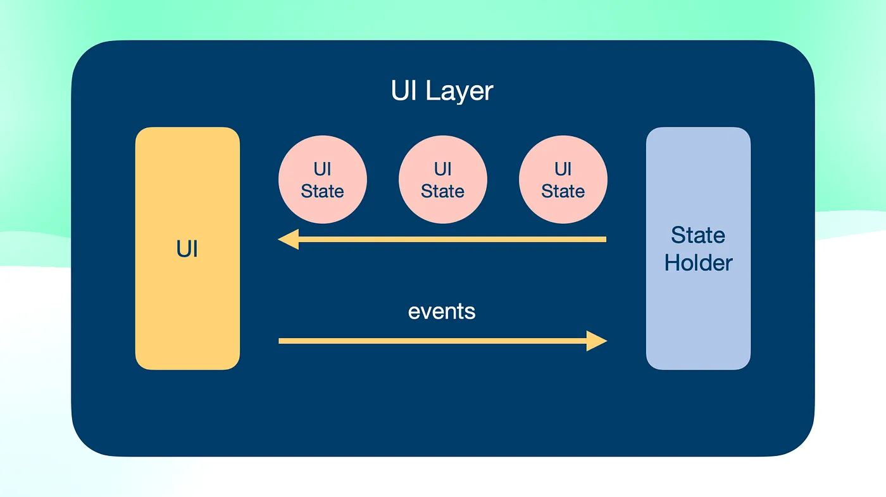
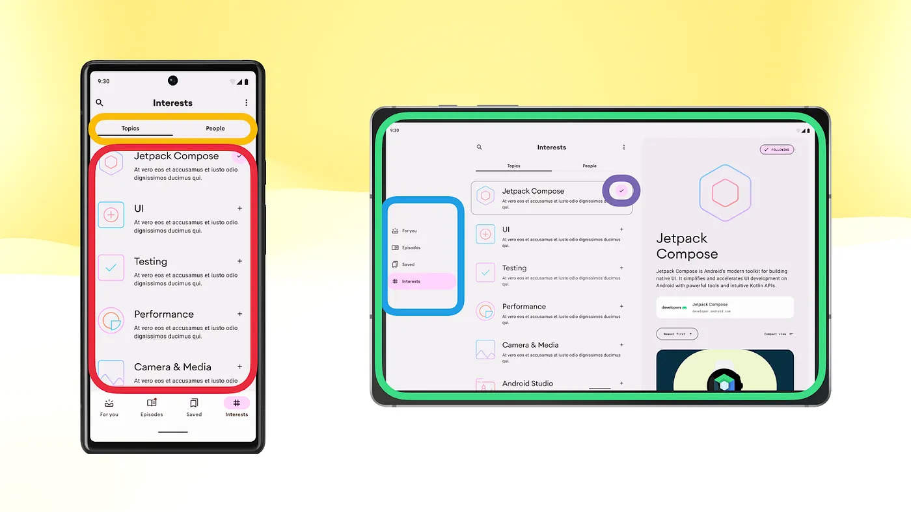
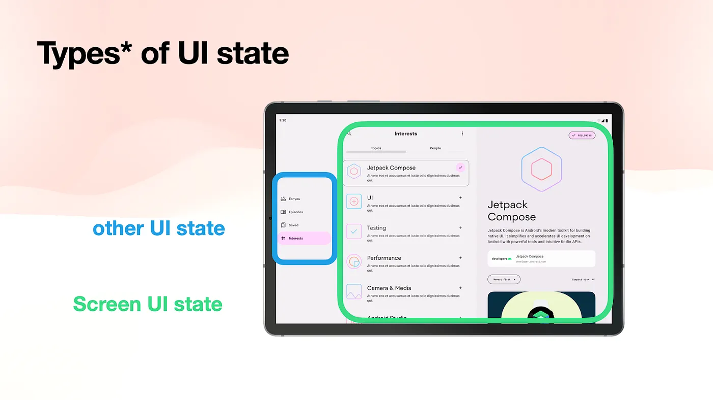
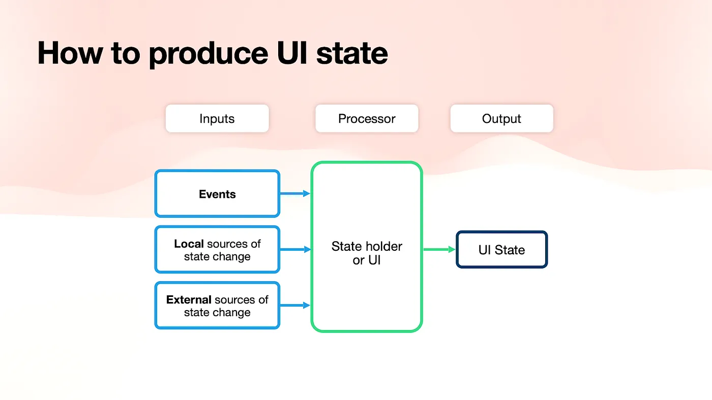
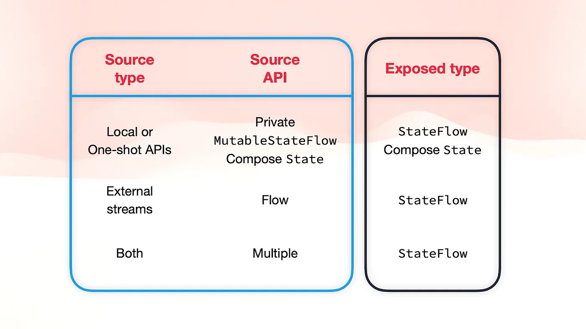
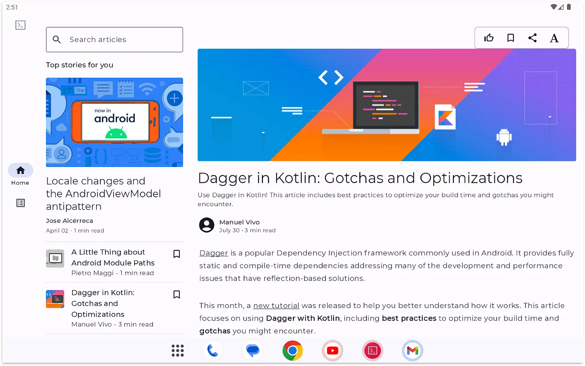

Crash Course on the Android UI Layer | Part 1
Part 1 - The UI and UI State
Description
This blog post series aims to summarise the Android Developer guidance on the UI layer. We’ll explore all the entities involved in it, understand the role each part plays, and discuss best practices.
Note: By the end of this series, you will have a general understanding of what happens on the UI layer and how to best handle state and logic within it, the various APIs involved, and how to use them. Additionally, we’ll provide decision trees to assist you when you’re in doubt.
This is part 1, where we’re covering the UI and the UI state. Part 2 covers state holders and other UI layer-related topics such as where to hoist state and save state on Android.
If you prefer to consume this content in video format, check out the talk I delivered at Droidcon London 2023.
The UI layer in the grand scheme of things
The UI layer isn’t the only layer you can find in a typical app architecture. Alongside it, you can also find the data layer and sometimes, the domain layer. According to the Android Architecture documentation:
-
The UI layer displays data on the screen.
-
The data layer exposes application data and contains the vast majority of the business logic of the app.
-
The domain layer is an optional layer that aims to 1) simplify and 2) reuse the potential business logic complexity of the UI layer. No less, no more.
Note: The business logic is what gives value to your application. It’s the implementation of product requirements that determines how your app fetches, stores, and modifies data.
 Architecture layers in a typical Android app: The UI, data, and domain layers
Entities in the UI layer
The UI layer consists of three distinct entities with clearly defined responsibilities. This distinction helps with separation of concerns, enhances testability, and promotes reusability.
-
The UI, or UI elements, render data on the screen.
-
The UI state describes the data to render on the screen. If the UI represents what the user sees, the UI state is what the app specifies the user should see.
-
An optional state holder is introduced to simplify the UI by managing a portion of its logic, holding its UI state, and exposing it to the UI. State holders are employed when the complexity of state and logic within the UI increases, making it more challenging to reason about.
 Entities in the UI layer: The UI, UI state, and state holder
Entities in the UI layer: The UI, UI state, and state holder
Unidirectional data flow
However, an app doesn’t show static information. Users regularly interact with it to perform operations that could potentially modify the application state. User events are typically handled by the state holder, and after processing them, they may result in a change in the UI state. In such cases, the UI state is not static. The state holder would expose a stream of UI state, and its emissions would be immediately reflected in the UI. This concept is also referred to as Unidirectional Data Flow (UDF) in the documentation.
 In Unidirectional Data Flow, Events flow from the UI to the state holder, and state flows from the state holder to the UI
The UI
The guidance in the documentation and this blog post applies to both the View system and Jetpack Compose. The role of the UI in the UI layer remains independent of your choice of UI toolkit.
When considering the UI layer, Developers tend to imagine the UI layer just at the screen level — that part of the UI tree that shows application data in most parts of the available display. And typically, Developers use the androidx.ViewModel as a state holder implementation detail.
However, just as you create “multiple” data layers for handling different types of data (e.g. PaymentsRepository, UserRepository, etc.), you have the flexibility to introduce UI layer entities at any point in the UI tree, or UI hierarchy, where they are needed. The granularity of this decision depends on the complexity of your UI.
 You can introduce the different entities in the UI layer in any part of the UI tree. For example, in the screen, the navigation rail, or simply in a button.
As we’ll see in the state holder sections, you can introduce a state holder at any point within the UI tree to simplify the UI. In fact, this is recommended in certain scenarios.
The UI state
The UI state describes the information to be displayed on the screen. In this section, we’ll see how to model, produce, and observe the UI state.
Types* of UI state
There’s a subtype of UI state that usually requires special treatment—the Screen UI state. This is often derived from the application state exposed from the data layer. This shout-out is because it contains most of the information displayed on the screen, which aligns with what the user is usually most interested in.
 As a special type of UI state, the Screen UI state usually contains application data exposed by the data layer
As a sneak peek of what’s to come later, it’s important to note that the Screen UI state should persist or be cached across configuration changes.
How to produce UI state
Producing UI state is the output of the state holder processing some inputs. These inputs can be: 1) events, 2) local sources of state change, or 3) external sources of state change.
 The UI state is the output of the state holder processing some inputs
Which APIs should we use in different cases?
-
The UI state should be exposed as an observable data holder class (e.g.
StateFlow, ComposeState<T>, orLiveData). This type ensures that the UI always has a UI state to render on the screen. -
Inputs can take various forms, primarily as streams of data or one-shot APIs.
Let’s see some examples of this!
Producing UI state with local source of state change
Imagine we’re on a screen that allows the user to roll two dice. Besides displaying the dice values, we also want to keep track of how many times the user rolls the dice. Our UI state could look like the following:
data class DiceRollUiState(
val firstDiceValue: Int? = null
val secondDiceValue: Int? = null
val numberOfRolls: Int = 0
)
The business logic for rolling the dice is implemented through a one-shot call to the Random API.
firstDiceValue = Random.nextInt(1..6),
secondDiceValue = Random.nextInt(1..6),
numberOfRolls = currentUiState.numberOfRolls + 1
So, how do we hold this UI state in the state holder? Creating an observable data holder class! In this example, we’re using the MutableStateFlow API to achieve this. To avoid direct dependencies on the Random API, which could potentially impact reusability and testability, we introduce a more generic RandomProvider interface, with its implementation being the Random API.
class DiceRollStateHolder(
private val randomProvider: RandomProvider
) {
private val _uiState = MutableStateFlow(DiceRollUiState())
val uiState: StateFlow<DiceRollUiState> = _uiState.asStateFlow()
fun rollDice() {
_uiState.update { currentState ->
currentState.copy(
firstDiceValue = randomProvider.nextInt(1..6),
secondDiceValue = randomProvider.nextInt(1..6),
numberOfRolls = currentState.numberOfRolls + 1
)
}
}
}
The business logic for generating this UI state is local to the state holder. To prevent exposing a mutable version of the observable state holder that would allow direct modification of the UI state and violate the single source of truth principle, we expose the UI state as StateFlow.uiState is the read-only version of our mutable state that we convert using the .asStateFlow operator.
Note: Instead of
MutableStateFlow, we could’ve also modelled our Ui State using ComposeState<T>or evenLiveData. For patterns and best practices concerning the use of ComposeState<T>in this context, check out the State production docs.
Producing UI state with external source of state change
Application data comes from other layers of the hierarchy in the form of streams of data. To adapt this data to UI state, we must transform it into an observable data holder type. In the following example, we greet the user by displaying their name on the screen.
class DiceRollViewModel(
userRepository: UserRepository
) : ViewModel() {
val userUiState: StateFlow<String> =
userRepository.userStream.map { user -> user.name }
.stateIn(
scope = viewModelScope,
started = SharingStarted.WhileSubscribed(5_000),
initialValue = ""
)
}
The state holder gets an instance of the data layer (i.e. UserRepository) as a dependency. It then maps the userStream: Flow to extract the specific information we are interested in, which in this case, is the user’s name. Since the map operator returns a Flow, we use the .stateIn operator to convert the Flow to a StateFlow, an observable data holder type.
.stateIn is a common operator used in state holders when dealing with Flows from other layers of the hierarchy and/or combining multiple data streams. Its method definition contains:
-
scope: defines the lifecycle of the resulting StateFlow. -
started: determines the strategy for starting and stopping sharing. In the code snippet, we useWhileSubscribed(5_000)to stop collecting data from upstream flows (e.g. the one coming fromUserRepository) when there are no collectors/observers for a specific period, in this case, 5 seconds. In this way, if the UI is not visible to the user for more than 5 seconds, we can cancel those data layer flow collections and save resources to protect the device’s health. -
initialValue: specifies the initial value of theStateFlow. As mentioned earlier, using an observable state holder type guarantees that the UI always has a UI state to render on the screen, and this parameter plays a crucial role in achieving that.
Summary of producing UI state
Let’s see a summary of what types to expose based on the type of input and the source API:
-
If you’re using one-shot APIs or local business logic, use a
MutableStateFlowor ComposeMutableState<T>to store the state in your state holder. Then, expose it asStateFlowor ComposeState<T>. -
When the source type is an external stream provided as a
Flow, you should expose aStateFlow. -
If you are dealing with both types of input, such as having at least one external stream, combine all the inputs and expose the UI state as a
StateFlow.
 Summary of the UI state exposed type given the source type and API
For more information about this topic, check out the State holders and state production talk or the UI layer State production docs.
How to model UI state
The UI state describes the UI at a certain point in time. The UI is the visual representation of the UI state. We previously defined a UI state defined as a data class in the DiceRollUiState code snippet above. Here it is again:
data class DiceRollUiState(
val firstDiceValue: Int? = null
val secondDiceValue: Int? = null
val numberOfRolls: Int = 0
)
It’s crucial that the fields in the UI state are immutable (i.e. vals) to ensure timing and consistency guarantees. Typically, UI state fields have sensible default values to facilitate creation and copying. However, not all UI states are that straightforward as the previous one.
Let’s consider a different scenario where we want to enable the user to roll the dice only when they are logged in. When the user lands on the screen, we check the user state and make a decision. Here’s a possible UI state for this case:
sealed interface DiceRollUiState {
data object Loading : DiceRollUiState
data class DiceRoll(
val username: String,
val numberOfRolls: Int,
val firstDiceValue: Int? = null,
val secondDiceValue: Int? = null,
) : DiceRollUiState
data object LogUserIn : DiceRollUiState
}
The UI state would be either loading (Loading), indicating that the user needs to log in (LogUserIn), or displaying the dice roll values with the username on the screen (DiceRoll).
When should you use a data class, sealed interface/class or a combination of both?
-
Use a
sealed interface/classwhen the screen can be in multiple exclusive states. -
Use a
data classwhen the data inside it can mutate. This is particularly useful in screens following an offline-fist approach where the screen might simultaneously display loading indicators, data, and error messages.
How to model complex UI state
When dealing with complex screens, you need to make sure you don’t create UI inconsistencies. As an exercise, let’s try to model the home screen of Jetnews, a Compose sample app.
 Home screen of Jetnews displayed on a tablet
The primary content of the screen presents a feed of articles and an open article details section where users can read the article. As a preliminary step to model the entire UI screen, one might define the following UI state:
private data class HomeViewModelState(
val postsFeed: PostsFeed? = null,
val selectedPostId: String? = null,
val isArticleOpen: Boolean = false,
val favorites: Set<String> = emptySet(),
val isLoading: Boolean = false,
val errorMessages: List<ErrorMessage> = emptyList(),
val searchInput: String = "",
)
However, there’s a problem. Can you spot it? Due to the default values, we could create UI inconsistencies! We could have a UI state with a selectedPostId without postsFeed. That wouldn’t be realistic, that should never occur. To resolve this issue, we need to introduce a more strongly typed state to prevent these problems. Considering that our business requirements allow either posts or nothing to be displayed on the screen, we can introduce a sealed interface on top of this state:
sealed interface HomeUiState {
val isLoading: Boolean
val errorMessages: List<ErrorMessage>
val searchInput: String
data class NoPosts(
override val isLoading: Boolean = false,
override val errorMessages: List<ErrorMessage> = emptyList(),
override val searchInput: String = ""
) : HomeUiState
data class HasPosts(
val postsFeed: PostsFeed,
val selectedPost: Post,
val isArticleOpen: Boolean,
val favorites: Set<String>,
override val isLoading: Boolean = false,
override val errorMessages: List<ErrorMessage> = emptyList(),
override val searchInput: String = ""
) : HomeUiState
}
Now our UI would either show HasPosts or NoPosts. In the HasPosts variant, it’s not possible to have a selectedPost without an existing postsFeed. Problem solved! While the initial approximation of our UI state could still prove useful for modelling the entire UI state privately, this type is never exposed. Ultimately, you would map that state to HomeUiState:
private data class HomeViewModelState(...) {
fun toUiState(): HomeUiState =
if (postsFeed == null) {
HomeUiState.NoPosts(...)
} else {
HomeUiState.HasPosts(...)
}
}
Exposing single vs multiple UI state streams
We often engage in discussions regarding whether a state holder should expose a single or multiple streams of data.
What we’ve been advising people so far is that you’d expose a single stream of UI state if fields depend on each other. On the other hand, if those fields are independent of each other and do not lead to UI inconsistencies, it’s acceptable to expose multiple streams.
Some may argue that if they are entirely independent, it implies they affect different parts of the UI, and each of those parts could have their own state holders. Sure, I agree. But if you don’t want to create multiple state holders and expose multiple UI states from a higher level one, that’s acceptable as well.
How to consume UI state
Ideally, UI state should be consumed from the UI in a lifecycle-aware manner. That is, only when the UI is visible on the screen. In the Android lifecycle, that is when the lifecycle is above the STARTED and STOPPED states. There are different APIs available to do this in an easy way.
For Android Views, you can use the repeatOnLifecycle or flowWithLifecycle APIs, which are found in the androidx.lifecycle.lifecycle-runtime-ktx artifact. Here’s how you’d use repeatOnLifecycle:
class SomeActivity : AppCompatActivity() {
override fun onCreate(savedInstanceState: Bundle?) {
// ...
lifecycleScope.launch {
repeatOnLifecycle(Lifecycle.State.STARTED) {
viewModel.uiState.collect {
// New UI state! Update the UI
}
}
}
}
}
Inside the repeatOnLifecycle coroutine block, you collect from the UI state. repeatOnLifecycle automatically creates a new coroutine that executes the block when the lifecycle reaches that state, and cancels the coroutine running the block when it falls below that Lifecycle state.
In Compose, use the collectAsStateWithLifecycle API that uses the repeatOnLifecycle API under the hood. This is available in the androidx.lifecycle.lifecycle-runtime-compose artifact. This API collects the underlying flow given a certain lifecycle State, and represents the latest value of the flow as Compose State<T>. This allows the composable function to recompose whenever a new element is emitted.
@Composable
fun SomeScreen(
modifier: Modifier = Modifier,
viewModel: SomeViewModel = viewModel()
) {
val uiState: SomeUiState by viewModel.uiState
.collectAsStateWithLifecycle()
// Emit UI given uiState. SomeScreen will recompose
// whenever `viewModel.uiState` emits a new value.
}
For more information about collecting in a lifecycle-aware manner, watch the Collect flows on Android talk or read the repeatOnLifecycle and collectAsStateWithLifecycle articles. If you’re interested in how these APIs were created, read the repeatOnLifecycle API design story blog post.
Now that you’ve read part 1 of the crash course on the UI layer, you should have a general understanding of the different entities present on this layer, and how to think about the UI and UI state effectively.
In part 2, we’ll cover state holders and other UI layer-related topics such as where to hoist state and saving state on Android.
👋 See you there!
Remember that if you prefer to consume this content in video format, check out the talk I delivered at Droidcon London 2023.